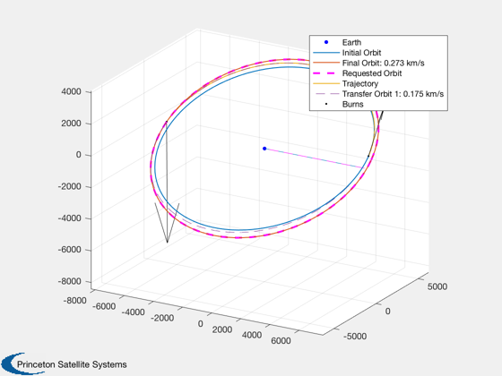
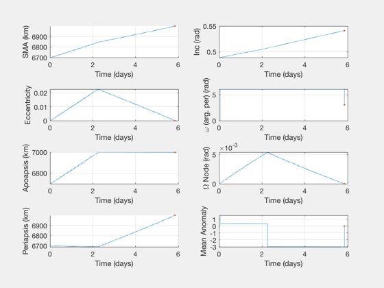
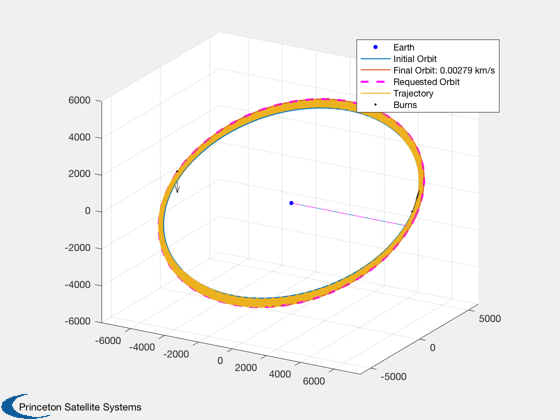

Contents
LEO Hohmann with inclination targeting and optimization demo - Single Rev
Small delta-V example, < 500 m/s
See also: OrbMnvrInclination, OrbMnvrInclAndHohm, OptimizeImpulsiveLVLH, PlotImpulsiveTrajectory
%--------------------------------------------------------------------------- % Copyright (c) 2018 Princeton Satellite Systems, Inc. % All rights reserved. %---------------------------------------------------------------------------
Parameters
sma1 = 6700; sma2 = 7000; inc1 = 28; % degrees inc2 = 31; ecc = 0.0; % if desired, small nonzero value elInitial = [sma1 inc1*pi/180 0 0 ecc 1.5776]; % a in km % 2*pi*rand(1) , 6.0287 elFinal = [sma2 inc2*pi/180 0 0 ecc 0.1]; % a in km dInc = (inc2-inc1)*pi/180;
analytical delta-Vs
Hohmann alone
[dVHoh, dV1, dV2] = DVHoh( sma1, sma2, VOrbit(sma1) ); DispWithTitle(dVHoh,'deltaV for Hohmann transfer alone'); % Inclination alone dVInc = OrbMnvrInclination( VOrbit(sma2), ecc, pi, abs(inc1-inc2)*pi/180 ); DispWithTitle(dVInc,'deltaV for inclination alone'); % combined [deltaV, deltaI] = OrbMnvrInclAndHohm( sma1, sma2, inc1*pi/180, inc2*pi/180 ); % saved by distributing inclination change deltaVsaved = dVHoh+dVInc.total - deltaV.total; DispWithTitle(deltaVsaved,'Delta V saved by doing inclination and Hohmann transfer together'); % for comparison, low-thrust spiral dVLow = LTPlaneChange(sma1,sma2,dInc); DispWithTitle(dVLow,'Delta V for low thrust spiral');
deltaV for Hohmann transfer alone
0.167071510508392
deltaV for inclination alone
total: 0.395065290932922
Delta V saved by doing inclination and Hohmann transfer together
0.129512854528931
Delta V for low thrust spiral
0.649167527544801
With analytic targeting; ~1 sec
disp('Optimizing with analytic targeting...') tic [burnsA,elOut,opt] = OptimizeImpulsiveLVLH(elInitial,elFinal); toc disp('...finished.') OptimizerReport( opt, true ) dVopt = sum(burnsA(:,1)); errDV = dVopt - deltaV.total; fprintf('\nHohmann/Inc DV: %g km/s\n',deltaV.total); fprintf('Optimizer DV: %g km/s\n',dVopt); fprintf('Error in DV from Hohmann: %g km/s (%g %%)\n\n\n',errDV,errDV/deltaV.total*100); PlotImpulsiveTrajectory(elInitial, burnsA, elFinal, 'lvlh');
Optimizing with analytic targeting...
Elapsed time is 0.832217 seconds.
...finished.
Total Delta-V (km/s):
0.447414539874743
Number of burns:
2
Initial elements, target, achieved:
Columns 1 through 3
6700 0.488692190558412 0
7000 0.541052068118242 0
6845.97627532104 0.506781897717854 0.00540364081240879
6999.98140032679 0.541051933919208 2.1073424255447e-08
Columns 4 through 6
0 0 1.5776
0 0 0.1
6.06078872875806 0.0227301995227524 0.345853570991029
3.0653013513501 2.58638628894382e-06 -9.22473429383655e-05
Mission duration:
114.226 Time (min)
Cost value:
0.447414539874743
Iterations:
327
Burns (lvlh: DV, alpha, beta, dT):
Columns 1 through 3
0.174624808804629 -0.652972324398587 0.953748616944369
0.272789731070114 -0.296494662102977 -1.25566018608357
Column 4
0.771841578583953
0.468486268832894
Hohmann/Inc DV: 0.432624 km/s
Optimizer DV: 0.447415 km/s
Error in DV from Hohmann: 0.0147906 km/s (3.41881 %)
 Implement with a DV limit per rev
burnMaxDeltaV = 0.005; burnsL = BreakImpulsesByDeltaV(burnsA,burnMaxDeltaV,elInitial); PlotElementsImpulsive(elInitial, burnsL, 'lvlh'); PlotImpulsiveTrajectory(elInitial, burnsL, elFinal, 'lvlh'); %-------------------------------------- 